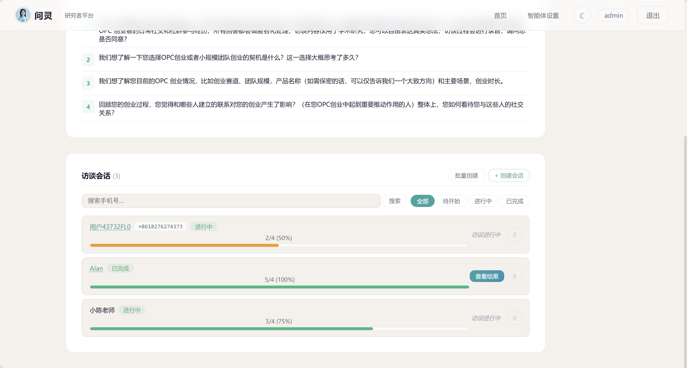

核心功能
为深度访谈而生
不只是投放问卷，更是构建真实的对话体验
设计框架
设计访谈框架
填写主题、描述、预设问题，选择访谈类型——结构化、半结构化或非结构化。
你可以设置追问次数上限、超时时间、AI温度等参数，甚至自定义系统提示词模板来塑造AI访谈者的人格。
- 创建访谈项目：主题、描述、预设问题
- 选择访谈类型：结构化/半结构化/非结构化
- 设置访谈参数：追问次数、超时、温度
- 系统提示词模板：内置或自定义AI人格

AI 访谈
AI智能访谈
AI以访谈者人格与受访者对话：自然开场、倾听回应、灵活追问、温暖收尾。
后台实时记录每个预设目标的覆盖状态，三种模式的追问策略不同，确保访谈既有效率又有深度。
- 结构化：严格按序，无追问
- 半结构化：任意顺序，每话题≤N次追问
- 非结构化：目标仅参考，自由探索≤M轮

数字人
科技国风数字人
受访者端展示可交互的SVG数字人，表情随访谈阶段自动变化。
插画风格角色，淡蓝科技光效，呼吸起伏、眨眼、头部轻晃等微动画，营造温暖的访谈氛围。桌面端侧栏展示，移动端顶部横幅。
- 表情切换：微笑、感兴趣、温暖、思考
- 微动画：呼吸起伏、眨眼、头部轻晃
- 淡蓝科技光效：下颌线、盘扣、发夹
- 响应式布局：桌面侧栏/移动端顶部
数字人展示区域
管理端
研究者管理端
完整的访谈生命周期管理：创建、发布、监控、分析。
访谈卡片直观展示主题、类型、状态，支持草稿/已发布/已结束筛选。会话管理包括创建会话、查看访问码、删除会话，实时追踪进度。
- 访谈CRUD：创建/编辑/删除/发布
- 会话管理：创建/查看访问码/删除
- 状态筛选：草稿/已发布/已结束
- 进度条显示：直观展示访谈进展

Agent Settings
智能体全局配置
灵活的AI服务配置：原生服务兑换码激活，或自备API密钥接入主流模型。
支持三种模式：原生模式（兑换码激活，无需API密钥）、预设模式（选择提供商+填写密钥）、进阶模式（自定义URL+模型ID）。多模态、ASR、TTS均可独立配置。
- 原生服务：兑换码激活，开箱即用
- 多模态：图片识别开关+提供商选择
- ASR：语音识别（OpenAI Whisper/阿里云）
- TTS：语音合成+音色选择+试听